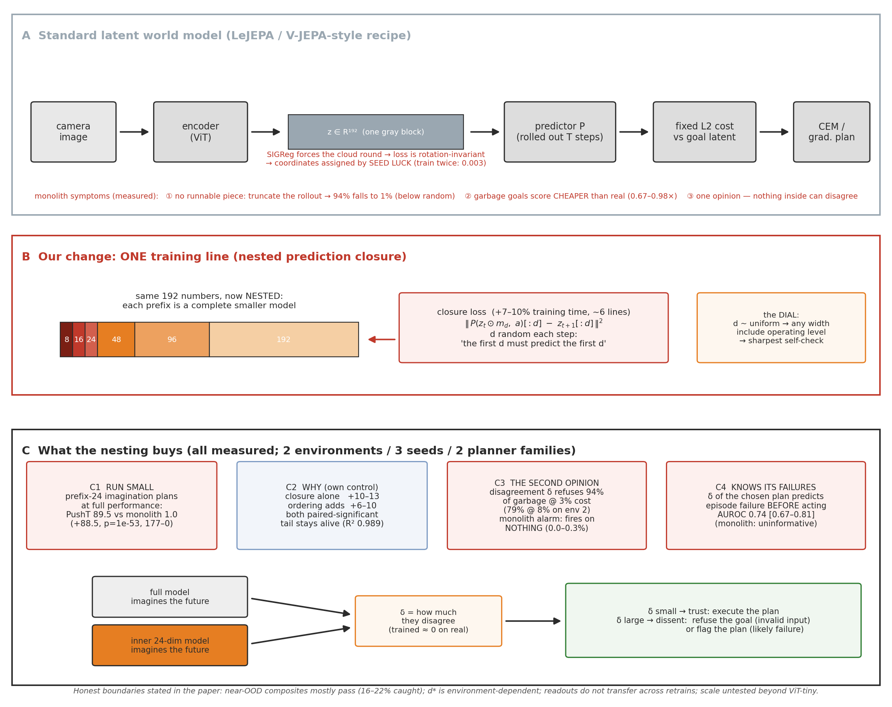
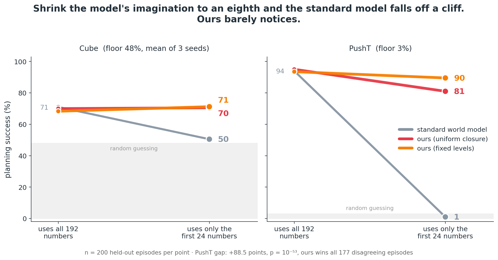
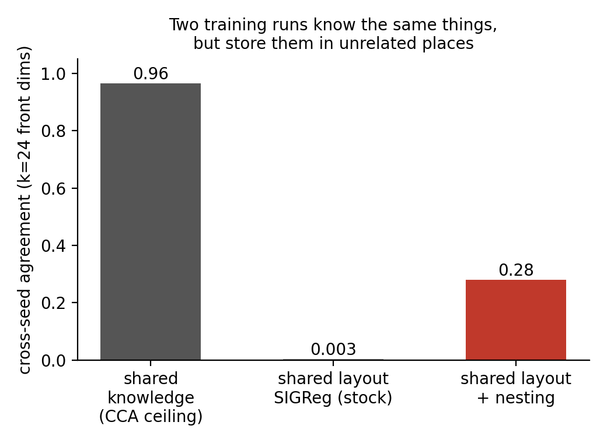
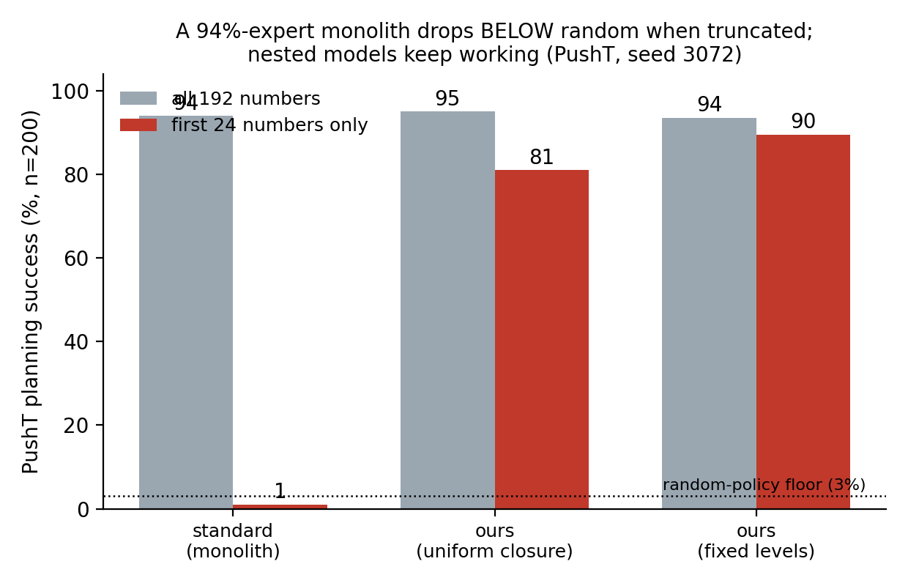
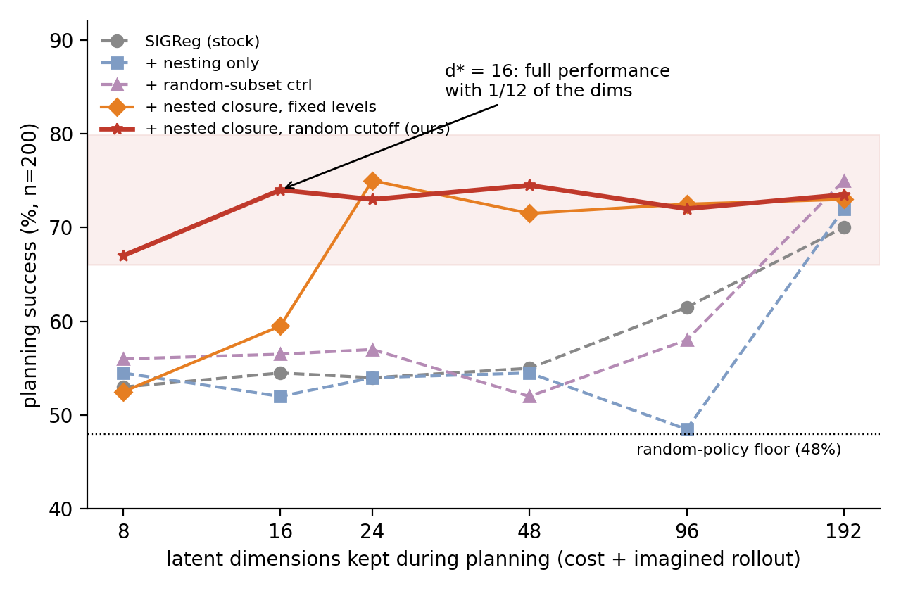
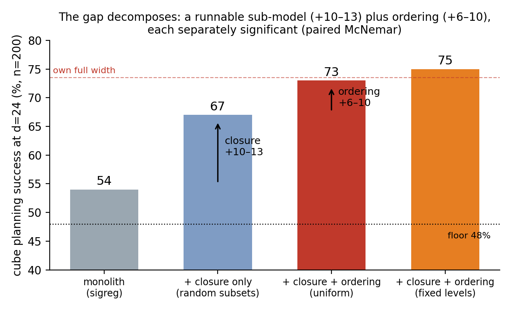
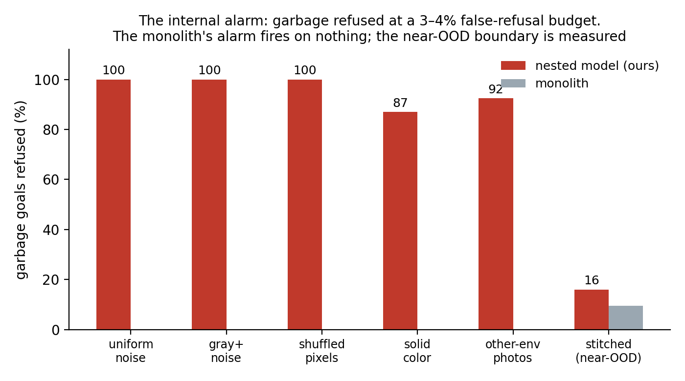
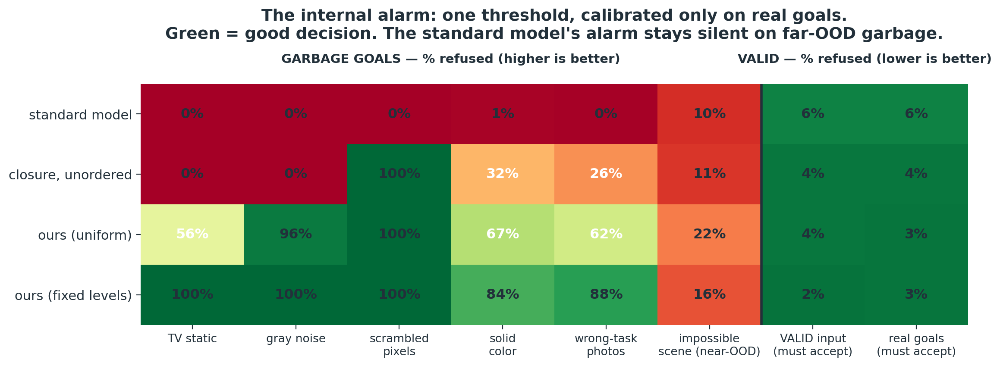
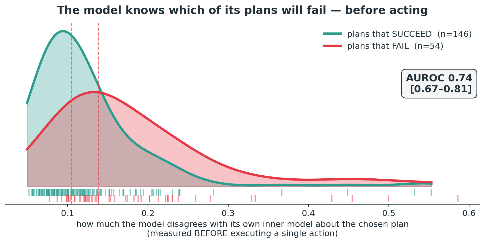

Status: experimental campaign COMPLETE (all cells landed; final
verdicts in §9). Target: ICLR (abstract ~Sep 19). This doc is the full
technical walkthrough for review — every claim carries its number and
its job trail. Raw evidence:
analysis/docs/results/.
Latent world models trained with the LeJEPA/SIGReg recipe plan by comparing 192-number embeddings with a fixed distance. We show these models are monoliths: their coordinates mean nothing in particular (train twice: 96.5% shared information, 0.003 shared layout), no runnable sub-model exists at any width (a 94%-success PushT expert drops to 1% — below the 3% random floor — when its imagination is truncated to 24 numbers), and they cannot doubt themselves (garbage images score as easier goals than real ones, 0.67–0.98x). One auxiliary loss — nested prediction closure, honestly described as nested dropout applied to the dynamics — changes the kind of object the model is: it now contains complete smaller models of itself. We show (i) the inner models genuinely work (masked-24 planning at 69–89.5% vs monolith 1–54%, on two environments, three seeds, two planner families, with the gain decomposed into closure +10–13 and ordering +6–10 by a dedicated control), and (ii) the family can disagree, and disagreement is an intrinsic validity signal: it refuses 94% of the garbage goals the score prefers (at 3% false-refusal), transfers to the second environment (79%@8%), and predicts the model’s own plan failures before acting (AUROC 0.74). The monolith supports none of this at any price.

Band A: the standard pipeline and its three measured symptoms.
Band B: the one-line change and the dial. Band C: the four measured
payoffs and how the internal disagreement signal works. This is the
candidate contribution figure for the paper (source:
analysis/src/figures/fig2_schematic.py; a designer/draw.io
pass can polish it for camera-ready).

The architecture. Encoder
f: image -> z in R^192 (ViT-tiny, trained from scratch),
latent predictor P: (z_t, action) -> z_{t+1}
(transformer, autoregressive rollout, history 3), trained with latent
MSE plus SIGReg (LeJEPA, Balestriero & LeCun 2025):
a sketched hypothesis test forcing the embedding distribution toward an
isotropic Gaussian. This is the current heuristics-free anti-collapse
recipe, and it comes with a theorem: isotropy minimizes downstream risk
for readouts that are re-fit per task. We verified the theorem holds on
our checkpoints — this work locates a failure outside its
scope, not a flaw in it.
Planning. Zero-shot: encode a goal image, search action sequences (CEM: 300 samples, 30 iterations; also a gradient-based planner), roll each candidate through P, score by squared distance between the imagined final latent and the goal latent, every coordinate weighted equally. The planner is a fixed-metric consumer — it never re-fits anything.
Evaluation discipline. OGBench cube pick-and-place
(floor: 48% — random actions succeed half the time at this offset) and
PushT (floor: 3.0% — 97 points of dynamic range). n=200 held-out
start/goal pairs, deterministic splits, epoch-10-pinned checkpoints. All
cross-arm comparisons are paired (identical 200
episodes; exact McNemar + 20k bootstrap). Per-episode outcome arrays for
all 72 evaluations are archived
(results/cube_episode_successes.json).
Both training losses are provably invariant to rotating the latent
space (L2 and the isotropic target are rotationally symmetric — proofs
in MATRYOSHKA_MATH.md, independently reviewed). So the
objective cannot prefer a basis. Does anything else? Train the identical
model twice, changing only the seed; encode the same held-out frames
with both:

Two dissections localize what the luck-filing costs. Truncating only the score to 24 of 192 coordinates costs nothing (70.5 vs 70.0 on cube) — SIGReg smears content so redundantly that any two dozen coordinates can serve a static comparison. But truncating the imagination (zero z[24:] at every predictor input and output) is fatal:

A model that succeeds 94% of the time with all 192 numbers succeeds 1% — below random — with its best 24. You can read a piece of a monolith; you cannot run a piece of one: every coordinate’s dynamics depends on all the others. (Cube: 70 -> 54, floor 48, three seeds. The below-floor behavior on PushT means the broken imagination actively steers away from goals. The diagnostic landed and replicates on PushT: cost-only truncation keeps 86.0 while masked-rollout dies at 1.0 — the rollout is the collapse site on both environments, §9.)
Garbage goal images — uniform noise, gray mush, pixel-shuffled frames, solid colors, photos of a different environment — receive lower planning cost than real goals (0.67–0.98x, all 8 checkpoints x 5 families). Isotropy has no “outside”: OOD inputs funnel toward the latent mean, where everything is close. And the monolith has exactly one opinion per input — there is no internal quantity that could flag the problem.
One auxiliary loss. At each training step, draw a cutoff d; require the first d coordinates, alone, to predict the first d coordinates of the future:
L_closure = || P(z_t * mask_d, a)[:d] - z_{t+1}[:d] ||^2 d ~ U{1..191}~6 lines of code, +6.8–9.8% wall-clock (measured), full-width behavior unchanged, bit-identical to stock when disabled. Mechanically this is nested dropout (Rippel et al. 2014) transplanted to the dynamics — we claim no loss novelty. It is, however, the only term that is not rotation-invariant, so training must commit to an ordering, and the preferred ordering front-loads self-predictive (slow, task-deciding) content. The cutoff distribution is a dial: fully random -> maximal width-flexibility; include your operating level (e.g. {24,48,96}) -> sharpest self-consistency at that level. Both settings are reported everywhere; the trade-off is measured (§6).

Cube (floor 48): stock models sit at 46.5–61.5% for every d < 192 (worst cells at d=24, best stock cell 61.5 at d=96, all far below own full width); ours plans at full performance from d=16 (74.0 vs 73.5 own full width, p=1.0). Replicated on three seeds (monolith masked-24: 54.0 / 51.0 / 46.5; ours: 69–75) and on PushT (+88.5 points over the monolith at masked-24; McNemar p = 1e-53; in the 177 episodes where they disagree, ours wins 177–0). Same pattern under a gradient-based planner (monolith 50/51/50, ours 71.5/72.0) and across a 10x CEM budget sweep — not a solver artifact.
The obvious objection — “you trained truncated, so truncated evaluation is just train-test match” — is answered by decomposition with a dedicated control (closure on random subsets: mask-robust, order-free):

Having any runnable sub-model is worth +10–13 points (p <= 5.4e-4); ordering the sub-models adds +6–10.5 more (p = .036 to 1e-4). Both effects real, separately significant, each with its own arm.
The coordinates past the cutoff still carry full information about the present (suffix readout R^2 = 0.989 = full width) — the model is nested, not hollowed. And task content concentrates: the block’s position reads from the first 8 coordinates at R^2 0.43, vs 0.03–0.10 for stock and 0.33 for unordered closure. A second control dissociates mechanism: ordering without the prediction term produces the best goal-discriminating prefix we measured (0.90 AUROC) yet still collapses when planning — static geometry does not buy runnable dynamics; the trained closure does.
Roll the full model and its level-24 inner model under the same actions from the same start. On real states they agree (the loss trained exactly that). On garbage embeddings, nothing ever trained agreement — and they diverge. That disagreement (delta) is an internal signal with no monolith counterpart:
Calibrate a threshold at the 95th percentile of delta on 128 held-out real goals (no garbage seen), then gate a disjoint test set:


During completely normal full-width planning, log the chosen plan’s cross-level disagreement; correlate with the episode’s outcome:

Plans the model is internally inconsistent about are the plans that fail: AUROC 0.74 [0.67–0.81] (bar of 0.65 pre-registered). The monolith’s signal is uninformative in the registered direction (0.296 — inverted; a sign-flipped detector would be test-set selection).
| falsified prediction | what the data said |
|---|---|
| readouts transfer across retrains once ordering exists | negative R^2 for ALL arms — partial subspace consistency is not a shared frame (the frame metrics explain exactly why) |
| MRL-style retrieval speedups transplant | random subsets retrieve as well as prefixes — SIGReg’s smear makes any subset retrieval-capable |
| coarse landscapes need less search budget | not significant (one suggestive cell, not claimed) |
| plus three earlier mechanistic hypotheses | (ESS/autocorrelation; latent “repulsion” = linear-probe artifact; junk-slots story — corrected to redundant smear) |
Six falsifications, three adversarial audit waves (which caught, among other things, three bugs that made our baselines unfairly weak — fixed, fair reruns landed and decisive: correctly calibrated baselines detect ~0% on the hard families), and one simulated 4-persona ICLR panel run twice: scores moved 4/5/5/5 -> 6/7/6/7 as the named gaps were closed.
| item | verdict |
|---|---|
| fair-baseline reruns (Ledoit-Wolf, split-half, kNN fix) | baselines now correctly calibrated (2-9.5% real refusal) AND near-blind on hard families (shuffled: 0.000 vs alarm 1.000; stitched 0.01-0.03 vs alarm 0.16). Comparison fair and decisive. Earlier “maha catches near-OOD” was a calibration artifact - retracted. |
| second PushT seed | collapse replicates (92.5 -> 4.5); fixed-level fix replicates (91.0 -> 85.5, d16 cliff 24.0). HONEST CASUALTY: uniform-arm run diverged in training (NaN) - stability event recorded; retrain optional. |
| native-24 monolith (“why not train small?”) | 70.5 full width = the 192-dim monolith. Training small matches PLANNING performance; the nesting’s value is stated precisely: every width in one checkpoint + the dissent signal (a small monolith has no inner model, no alarm). |
| PushT width curve + below-floor diagnostic | cost-only truncation keeps 86.0 (vs 1.0 masked-rollout): the rollout is what dies, on env 2 as on cube (70.5). PushT d* for uniform ~ 48-96 (87.5/92.0); fixed-level 92.5/93.0. |
| 3-seed-pair frame metrics (Fig-1 error bars) | Procrustes 0.581+-0.005 (stock) vs 0.253+-0.002 (ours) - separation ~50x its spread; identity correlation at null everywhere (why raw reuse fails). |
| two-brains figure | rendered (fig_two_brains.png): no diagonal for ANY arm; ours’ front block brightens - ordering recurs as a subspace, not a frame. |
Optional items deferred (not blocking): cmatpred PushT seed-2 retrain, goal-stream closed-loop table (composable from archived arrays), multi-lag timescale curves, multi-level aggregated alarm, frozen-encoder condition, VICReg empirics (user-deferred; the invariance-class theory statement stands alone in RELATED_WORK).
Code: probes in analysis/src/ (each result doc names its
script + job id). Training: train.py +
/scratch/.../logs/*-arm-train.sbatch (arm cases
documented). Evals: analysis/src/eval_drift.py (prefix
masking, confidence logging). Evidence:
analysis/docs/results/*.md (pre-registrations with verdicts
appended, never rewritten), per-episode arrays in
results/cube_episode_successes.json (57 evals), probe JSONs
archived per wave. Audits: results/REVIEW_*.md (5 waves).
Narrative for non-experts: THE_SIMPLE_STORY.md. Experiment
index: PROGRESS_SUMMARY.md.